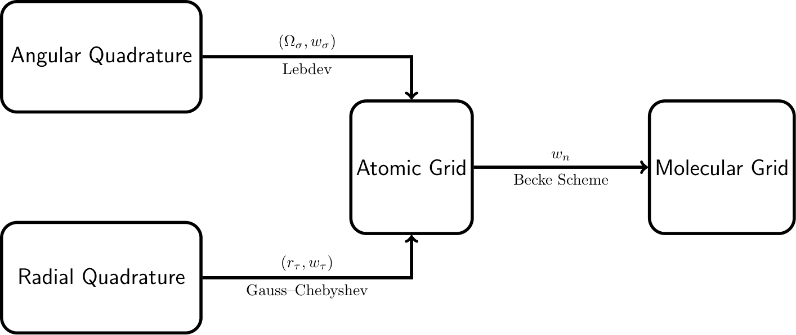
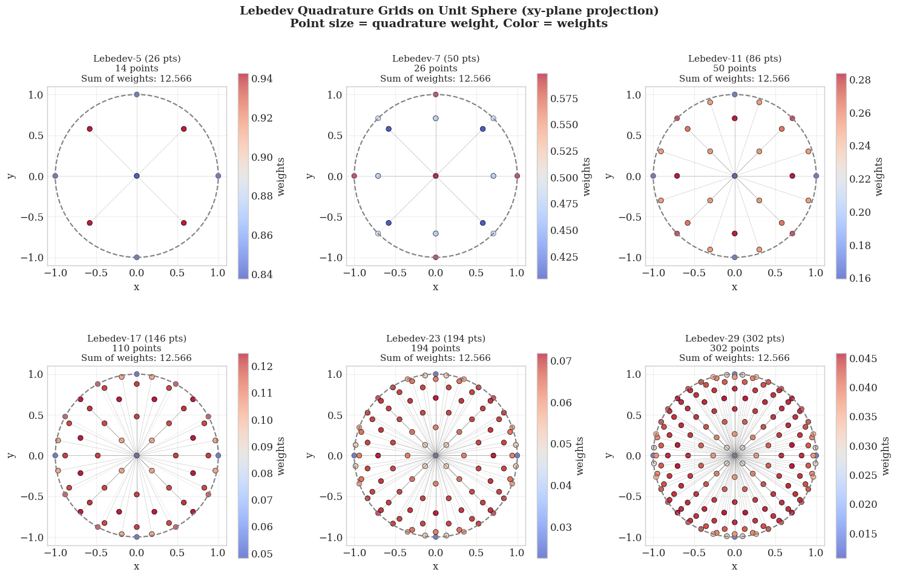
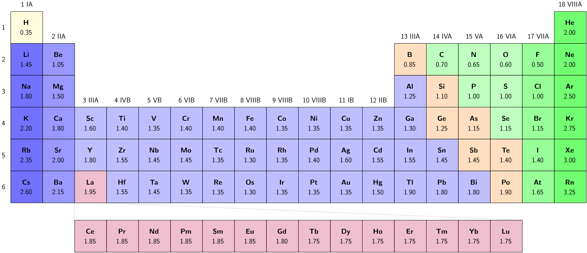
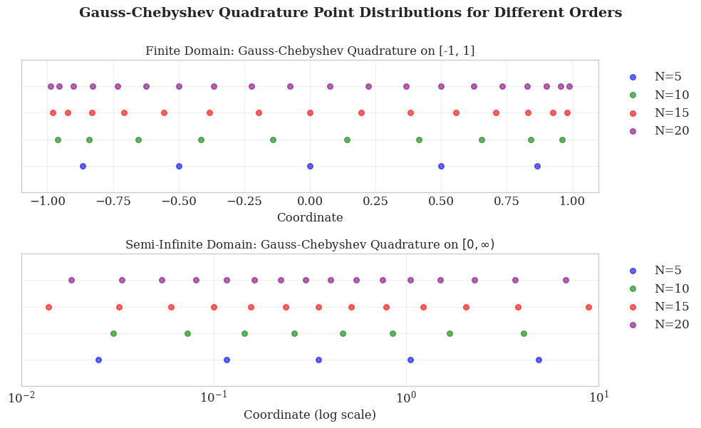
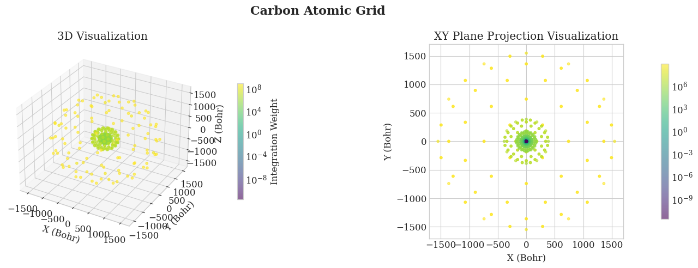
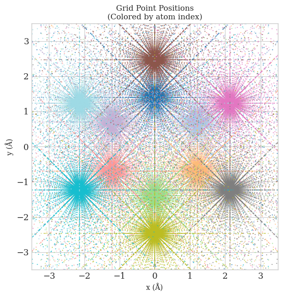
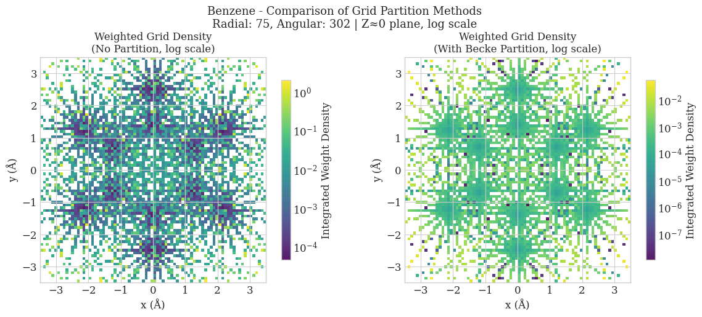

Notebook
MolGrid provides a flexible and efficient framework for generating numerical integration grids in quantum chemistry calculations. This notebook demonstrates how to build your own molecular grid step by step with Python, using minimal code and third-party libraries. This project does not aim to exhaustively enumerate all available technical approaches; instead, it focuses on one popular scheme which combines angular Lebedev quadrature, radial Gauss-Chebyshev quadrature, and Becke partitioning.
Overview
In molecular Density Functional Theory (DFT), numerical integration is a critical step for achieving both accuracy and efficiency in quantum chemistry calculations. Since most functionals do not admit analytical integrals, numerical integration over a finite spatial grid is required. In practice, the continuous integral is approximated as a weighted sum over discrete grid points:
where \(\mathbf{r}_i\) are the grid points and \(w_i\) are the corresponding integration weights. For molecular systems, the integration over \(\mathbb{R}^3\) is decomposed into a sum of atom-centered contributions. Specifically, the integral is approximated as:
Here, the total integral is expressed as a weighted sum of atomic-centered integrals over all nuclei. Each atomic contribution is evaluated using accurate radial and angular quadrature schemes, where \(r_\tau\) and \(\Omega_\sigma\) denote the radial and angular grid points, respectively, with corresponding weights \(w_\tau\) and \(w_\sigma\). The atomic contributions are combined using position- and atom-dependent weight functions \(w_n(\mathbf{r})\), which ensure a smooth partitioning of space among atoms.

Angular Integration (Lebedev Quadrature)
The angular integration over the unit sphere is a fundamental component of molecular grid generation. For a function \(f(\Omega)\) defined on the surface of a sphere, the angular integral is given by
where the angular grid points \(\Omega_{\sigma}\) and weights \(w_{\sigma}\) are to be determined. For an ideal scheme, the angular integration points should be distributed over the surface of the sphere as uniformly as possible. A perfectly uniform distribution is provided by the vertices or the face centroids of a regular polyhedron. Lebedev and Laikov developed a highly efficient set of quadrature points that are invariant under the octahedral rotation group with inversion. Consequently, the vast majority of modern quantum chemistry programs now utilize Lebedev quadrature for angular integration when handling DFT problems.
Each Lebedev grid is characterized by a fixed number of angular quadrature points \(N_\Omega \approx (L + 1)^2 / 3\), which exactly integrate spherical harmonics up to a maximum degree \(L\). These fixed-size sets, known as rules, are listed in Table 1.
Table 1: Lebedev angular quadrature grids: maximum degree L and corresponding number of angular grid points \(N_\Omega\).
\(L\) |
\(N_\Omega\) |
\(L\) |
\(N_\Omega\) |
\(L\) |
\(N_\Omega\) |
\(L\) |
\(N_\Omega\) |
|---|---|---|---|---|---|---|---|
3 |
6 |
19 |
146 |
41 |
590 |
89 |
2702 |
5 |
14 |
21 |
170 |
47 |
770 |
95 |
3074 |
7 |
26 |
23 |
194 |
53 |
974 |
101 |
3470 |
9 |
38 |
25 |
230 |
59 |
1202 |
107 |
3890 |
11 |
50 |
27 |
266 |
65 |
1454 |
113 |
4334 |
13 |
74 |
29 |
302 |
71 |
1730 |
119 |
4802 |
15 |
86 |
31 |
350 |
77 |
2030 |
125 |
5294 |
17 |
110 |
35 |
434 |
83 |
2354 |
131 |
5810 |
In practice, for computational efficiency, these values are typically precomputed and read directly from storage. These precomputed values can be found at the following download link. Please note that the angular weights provided below are normalized to unity (\(\sum w_{\sigma} = 1\)), and integrating over the entire spherical surface requires an additional factor of \(4\pi\).
import numpy as np
import matplotlib.pyplot as plt
from molgrid.quadrature import Lebedev
# Initialize Lebedev object
lebedev = Lebedev()
def project_to_2d(coords, projection='xy'):
"""Project 3D coordinates to 2D plane"""
if projection == 'xy':
return coords[:, 0], coords[:, 1]
elif projection == 'xz':
return coords[:, 0], coords[:, 2]
elif projection == 'yz':
return coords[:, 1], coords[:, 2]
# Define different Lebedev quadrature degrees
lebedev_levels = {
'Lebedev-5 (26 pts)': 5,
'Lebedev-7 (50 pts)': 7,
'Lebedev-11 (86 pts)': 11,
'Lebedev-17 (146 pts)': 17,
'Lebedev-23 (194 pts)': 23,
'Lebedev-29 (302 pts)': 29,
}
# Create figure
fig, axes = plt.subplots(2, 3, figsize=(15, 10))
for idx, (title, degree) in enumerate(lebedev_levels.items()):
ax = axes[idx // 3, idx % 3]
try:
# Generate Lebedev grid points and weights
coords, weights = lebedev.get(degree)
# Project to xy-plane
x, y = coords[:, 0], coords[:, 1]
# Verify weights are positive
assert np.all(weights > 0), f"Weights should be positive, got min: {weights.min()}"
# Check weight sum - should be 4π for surface area or normalized to 1
weight_sum = np.sum(weights)
# Plot grid points: color = weights, size = quadrature weight
scatter = ax.scatter(coords[:, 0], coords[:, 1], c=weights, cmap='coolwarm',
alpha=0.7, edgecolors='black', linewidth=0.5)
# Add unit circle
circle = plt.Circle((0, 0), 1, fill=False, color='gray',
linestyle='--', linewidth=1.5)
ax.add_patch(circle)
# Add radial lines from origin to points (only for points with significant weights)
for i in range(len(x)):
if weights[i] > weights.max() * 0.1:
ax.plot([0, x[i]], [0, y[i]], 'gray', alpha=0.2, linewidth=0.5)
ax.set_xlim(-1.1, 1.1)
ax.set_ylim(-1.1, 1.1)
ax.set_aspect('equal')
ax.set_title(f'{title}\n{len(coords)} points\nSum of weights: {weight_sum:.3f}', fontsize=11)
ax.set_xlabel('x')
ax.set_ylabel('y')
ax.grid(True, alpha=0.3)
plt.colorbar(scatter, ax=ax, label='weights', shrink=0.8)
except Exception as e:
print(f"Error for degree {degree}: {e}")
ax.text(0.5, 0.5, f'Not available\nfor degree {degree}',
ha='center', va='center', transform=ax.transAxes)
ax.set_xlim(-1.1, 1.1)
ax.set_ylim(-1.1, 1.1)
plt.suptitle('Lebedev Quadrature Grids on Unit Sphere (xy-plane projection)\nPoint size = quadrature weight, Color = weights',
fontsize=14, fontweight='bold')
plt.tight_layout()
plt.show()

Radial Integration (Gauss-Chebyshev Quadrature)
Unlike Lebedev quadrature, which dominates the choice of angular integration when handling DFT problems, there are few competitive quadrature rules for radial integration. This note is not intended to exhaustively list all the available quadrature rules, but rather to introduce only one of the most popular: Gauss-Chebyshev quadrature for radial integration.
Gauss-Chebyshev Quadrature for \([-1, 1]\)
Gauss–Chebyshev quadrature of the second kind provides an approximate solution to definite integrals of the form
This quadrature rule is exact for all polynomials of degree up to \(2N-1\). The evaluation points \(x_{\tau}\) for quadrature order \(N\) are the roots of the Chebyshev polynomial of the second kind \(U_N(x)\), given by
The associated weights \(w_{\tau}\) are
The Chebyshev polynomials of the second kind \(U_N(x)\) are orthogonal with respect to the weight function \(\sqrt{1-x^2}\) over \([-1, 1]\):
This orthogonality ensures optimal convergence properties for the quadrature rule. As a consequence,
Gauss-Chebyshev Quadrature for \([0, \infty)\)
For radial integration in molecular DFT problems, which spans the improper interval \([0, \infty)\), Gauss–Chebyshev quadrature of the second kind is employed with a suitable variable transformation. This transformation maps the finite domain \([-1, 1]\) to the infinite interval \([0, \infty)\) via
where \(R_{\text{scale}}\) is taken as half the Bragg–Slater radius.

Using the coordinate transformation, the radial integral becomes
where the weights \(w_{\tau}\) are given by
import numpy as np
import matplotlib.pyplot as plt
from molgrid.quadrature import GaussChebychev
# Set style for better visualization
plt.style.use('seaborn-v0_8-whitegrid')
plt.rcParams['font.family'] = 'serif'
plt.rcParams['font.size'] = 12
# Create Gauss-Chebyshev quadrature object
chebychev = GaussChebychev()
# Create 2x1 subplots
fig, axes = plt.subplots(2, 1, figsize=(10, 6))
orders = [5, 10, 15, 20]
colors = ['blue', 'green', 'red', 'purple']
# Top plot: Finite domain (Chebyshev quadrature on [-1, 1])
ax1 = axes[0]
for n, color in zip(orders, colors):
points, _ = chebychev.finite(n)
y_pos = np.full_like(points, n / 25) # Normalize y position
ax1.scatter(points, y_pos, s=30, c=color, alpha=0.6, label=f'N={n}')
ax1.set_xlim(-1.1, 1.1)
ax1.set_ylim(0, 1)
ax1.tick_params(labelleft=False)
ax1.set_xlabel('Coordinate', fontsize=12)
ax1.set_title('Finite Domain: Gauss-Chebyshev Quadrature on [-1, 1]', fontsize=12)
ax1.grid(True, alpha=0.3)
ax1.legend(loc='upper left', bbox_to_anchor=(1.02, 1), fontsize=12)
# Bottom plot: Semi-infinite domain (Radial quadrature)
ax2 = axes[1]
for n, color in zip(orders, colors):
points, _ = chebychev.semi_infinite(0.35, n)
y_pos = np.full_like(points, n / 25) # Normalize y position
ax2.scatter(points, y_pos, s=30, c=color, alpha=0.6, label=f'N={n}')
ax2.set_xscale('log')
ax2.set_xlim(0.01, 10) # Adjust based on point distribution
ax2.set_ylim(0, 1)
ax2.tick_params(labelleft=False)
ax2.set_xlabel('Coordinate (log scale)', fontsize=12)
ax2.set_title(r'Semi-Infinite Domain: Gauss-Chebyshev Quadrature on $[0, \infty)$', fontsize=12)
ax2.grid(True, alpha=0.3)
ax2.legend(loc='upper left', bbox_to_anchor=(1.02, 1), fontsize=12)
# Add overall title
fig.suptitle('Gauss-Chebyshev Quadrature Point Distributions for Different Orders',
fontsize=14, fontweight='bold', y=1)
plt.tight_layout()
plt.show()

Atomic Grid
With the radial and angular quadrature schemes established, we can now combine them to create integration grids for individual atoms. Specifically, for a given atomic center located at \(\mathbf{R}_n\), the radial quadrature yields a set of \(N_{\text{rad}}\) radial points \(\{r_{\tau}\}_{\tau=1}^{N_{\text{rad}}}\) with associated weights \(\{w_{\tau}^{\text{rad}}\}_{\tau=1}^{N_{\text{rad}}}\), while the angular quadrature provides \(N_{\text{ang}}\) angular points \(\{\Omega_{\sigma}\}_{\sigma=1}^{N_{\text{ang}}}\) on the unit sphere with weights \(\{w_{\sigma}^{\text{ang}}\}_{\sigma=1}^{N_{\text{ang}}}\). The composite atomic grid is then defined as the tensor product of these sets:
where the \(r^2\) factor arises from the volume element \(d\mathbf{r} = r^2 \, dr \, d\Omega\) in spherical coordinates. This construction ensures that the integration over the atomic domain accurately approximates the three-dimensional integral of any function \(f(\mathbf{r})\):
Atomic grids support adaptive grid refinement strategies to balance accuracy and computational efficiency. The choice of grid fineness directly impacts both the accuracy of numerical integration and the overall computational cost. Table 2 summarizes typical grid configurations and their recommended applications.
Grid Type |
Radial Points |
Angular Points |
Accuracy |
Cost |
Best Use Case |
|---|---|---|---|---|---|
Coarse |
50 |
26 |
Low |
Very Fast |
Geometry optimization, initial SCF cycles |
Medium |
75 |
110 |
Good |
Fast |
Single-point energies, standard DFT calculations |
Fine |
100 |
194 |
High |
Moderate |
Property calculations (dipole moments, NMR) |
Very Fine |
150 |
302 |
Very High |
Slow |
Benchmarking, reaction barrier calculations |
Ultra Fine |
200 |
434 |
Excellent |
Very Slow |
Converged results, high-precision studies |
For practical applications, most quantum chemistry programs employ element-specific grid definitions to account for the different electronic structures and spatial extents of atoms. Table 3 shows the default grid settings used in PySCF, which adopt a balanced approach between accuracy and efficiency across the periodic table.
Table 3: Default atomic grid parameters in PySCF by element group.
Elements |
Radial Fineness |
Angular Fineness |
Total Points (approx.) |
|---|---|---|---|
H–He |
50 |
302 |
~15,100 |
Li–Ne |
75 |
302 |
~22,650 |
Na–Ar |
80 |
434 |
~34,720 |
K–Kr |
90 |
434 |
~39,060 |
Rb–Xe |
95 |
434 |
~41,230 |
Cs–Rn |
100 |
434 |
~43,400 |
These default settings are designed to provide a good balance between accuracy and computational cost for routine DFT calculations. For high-precision work, users may increase the radial fineness and angular order, while for exploratory calculations or large systems, coarser grids can significantly reduce computational time with minimal loss of accuracy.
For most production calculations, the default PySCF settings (or equivalent in other programs) offer an optimal trade-off, though users should perform grid convergence tests for systems where high accuracy is critical.
import numpy as np
import matplotlib.pyplot as plt
from mpl_toolkits.mplot3d import Axes3D
from matplotlib.colors import LogNorm
from pyscf import gto, dft
from pyscf.dft import numint
from molgrid.molecule import Atom
from molgrid.atomicgrid import AtomicGrid
# Create PySCF molecule (same geometry as our MolGrid molecule)
mol_pyscf = gto.M(atom='C 0 0 0', basis='6-31g', verbose=0)
# Run DFT calculation to get the electron density
mf = dft.RKS(mol_pyscf)
mf.kernel()
rdm1 = mf.make_rdm1() # Get the 1-electron reduced density matrix
# Create a carbon atom
mol_molgrid = Atom('C', [0.0, 0.0, 0.0])
# Create atomic grid with 75 radial shells and 110 angular points
grid_molgrid = AtomicGrid(mol_molgrid, nshells=75, nangpts=110)
print(f"Atomic grid:")
print(f" Number of points: {len(grid_molgrid)}")
print(f" Coordinates shape: {grid_molgrid.coords.shape}")
print(f" Weights shape: {grid_molgrid.weights.shape}")
# Evaluate atomic orbitals on our grid
ao = numint.eval_ao(mol_pyscf, grid_molgrid.coords, deriv=0)
# Calculate electron density at each grid point
rho = numint.eval_rho(mol_pyscf, ao, rdm1, xctype='LDA')
# Integrate electron density over the entire grid
number_of_electrons = np.sum(rho * grid_molgrid.weights)
print(f"\nElectron density calculation results:")
print(f" Calculated number of electrons: {number_of_electrons:.6f}")
print(f" Expected number of electrons: 6.000000")
print(f" Error: {abs(number_of_electrons - 6.0):.6f}")
# Visualize the atomic grid
fig = plt.figure(figsize=(15, 5))
# Plot 1: Full atomic grid (3D)
ax1 = fig.add_subplot(121, projection='3d')
coords = grid_molgrid.coords
weights = grid_molgrid.weights
# Color by weight magnitude
sc1 = ax1.scatter(coords[:, 0], coords[:, 1], coords[:, 2],
c=weights, cmap='viridis', norm=LogNorm(),s=10, alpha=0.6)
ax1.set_xlabel('X (Bohr)')
ax1.set_ylabel('Y (Bohr)')
ax1.set_zlabel('Z (Bohr)')
ax1.set_title('3D Visualization')
cbar1 = plt.colorbar(sc1, ax=ax1, shrink=0.6, pad=0.1)
cbar1.set_label('Integration Weight')
# Plot 2: 2D projection onto XY plane
ax2 = fig.add_subplot(122)
sc2 = ax2.scatter(coords[:, 0], coords[:, 1],
c=weights, cmap='viridis', norm=LogNorm(), s=10, alpha=0.6)
ax2.set_xlabel('X (Bohr)')
ax2.set_ylabel('Y (Bohr)')
ax2.set_title('XY Plane Projection Visualization')
ax2.set_aspect('equal')
cbar2 = plt.colorbar(sc2, ax=ax2, shrink=0.8, pad=0.1)
cbar2.set_label('')
plt.suptitle(f'Carbon Atomic Grid',
fontsize=16, fontweight='bold')
plt.tight_layout()
plt.show()
Atomic grid:
Number of points: 8250
Coordinates shape: (8250, 3)
Weights shape: (8250,)
Electron density calculation results:
Calculated number of electrons: 6.000000
Expected number of electrons: 6.000000
Error: 0.000000

Molecular Grid
Now we are at the last step of the tutorial: combining atomic grids from all atoms into a molecular grid. Recall the equation we introduced in the overview. Besides putting all the atomic grids together, we also need to use Becke partitioning to assign appropriate weights \(w_n\) to each grid point.
But before we start, let’s simply combine all the atomic grids together and take a look at the distribution of grid points in space.
import matplotlib.pyplot as plt
import numpy as np
from molgrid.molecule import Molecule, Atom
from molgrid.moleculargrid import MolecularGrid
# Create benzene molecule
atoms = [
Atom('C', [0.0, 1.39676, 0.00000]),
Atom('C', [1.20920, 0.69838, 0.00000]),
Atom('C', [1.20920, -0.69838, 0.00000]),
Atom('C', [0.0, -1.39676, 0.00000]),
Atom('C', [-1.20920, -0.69838, 0.00000]),
Atom('C', [-1.20920, 0.69838, 0.00000]),
Atom('H', [0.0, 2.46676, 0.00000]),
Atom('H', [2.13620, 1.23338, 0.00000]),
Atom('H', [2.13620, -1.23338, 0.00000]),
Atom('H', [0.0, -2.46676, 0.00000]),
Atom('H', [-2.13620, -1.23338, 0.00000]),
Atom('H', [-2.13620, 1.23338, 0.00000]),
]
benzene_molgrid = Molecule(atoms)
# Create molecular grids with and without partition
grid_without_partition = MolecularGrid(benzene_molgrid, nshells=75, nangpts=302, partition_method=None)
# Create figure
fig, ax = plt.subplots(figsize=(6, 6))
colors = plt.cm.tab20(np.linspace(0, 1, len(benzene_molgrid)))
for idx, atomic_grids in enumerate(grid_without_partition):
ax.scatter(atomic_grids.coords[:, 0], atomic_grids.coords[:, 1], c=[colors[idx]], s=2, alpha=0.5,
edgecolors='none', rasterized=True)
ax.set_xlabel('x (Å)', fontsize=10)
ax.set_ylabel('y (Å)', fontsize=10)
ax.set_title('Grid Point Positions\n(Colored by atom index)', fontsize=11)
ax.set_aspect('equal')
ax.set_xlim(-3.5, 3.5)
ax.set_ylim(-3.5, 3.5)
plt.tight_layout()
plt.show()

Becke Partitioning in Molecular Grids
Simply concatenating individual atomic grids to form a pseudo-molecular grid leads to double-counting of regions where atomic grids overlap, resulting in incorrect integration of molecular properties. The Becke partitioning scheme ensures a smooth and physically meaningful distribution of weights across the molecular grid, thereby avoiding double counting and enabling accurate evaluation of electron density-dependent quantities.
Core Principle
The molecular weight function for atom \(A\) is defined as:
where \(p_A(\mathbf{r})\) is the atomic weight function:
with:
\(\mu_{AB} = \frac{|\mathbf{r} - \mathbf{R}_A| - |\mathbf{r} - \mathbf{R}_B|}{R_{AB}}\)
\(R_{AB} = |\mathbf{R}_A - \mathbf{R}_B|\) is the interatomic distance
\(s(\mu)\) is a smooth switching function
The weight \(w_A(\mathbf{r})\) satisfies \(\sum_A w_A(\mathbf{r}) = 1\) for all grid points, ensuring a complete partition of space.
Switching Function
The switching function \(s(\mu)\) ensures smooth transitions between atomic regions. A common polynomial approximation is:
This function transitions from 1 (near atom A) to 0 (near atom B), with a smooth cubic spline in the intermediate region.
Iterative Sharpening
Becke introduced an iterative sharpening procedure to make the atomic boundaries more distinct:
starting from \(f_0 = \mu_{AB}\) and iterating \(k\) times. The smoothing function becomes:
The stiffness parameter is typically set to \(k = 3\), providing a soft but well-defined atomic partition.
Atomic Size Adjustment
For heteronuclear molecules, Becke proposed an atomic size adjustment to account for different atomic radii. The correction term is added to \(\mu_{AB}\):
where \(\chi_{AB}\) is the ratio of atomic radii of atoms A and B. Common radius choices include Bragg-Slater covalent radii.
import matplotlib.pyplot as plt
import numpy as np
from matplotlib.colors import LogNorm
from pyscf import gto, dft
from molgrid.molecule import Molecule, Atom
from molgrid.moleculargrid import MolecularGrid
# Create benzene molecule
atoms = [
Atom('C', [0.0, 1.39676, 0.00000]),
Atom('C', [1.20920, 0.69838, 0.00000]),
Atom('C', [1.20920, -0.69838, 0.00000]),
Atom('C', [0.0, -1.39676, 0.00000]),
Atom('C', [-1.20920, -0.69838, 0.00000]),
Atom('C', [-1.20920, 0.69838, 0.00000]),
Atom('H', [0.0, 2.46676, 0.00000]),
Atom('H', [2.13620, 1.23338, 0.00000]),
Atom('H', [2.13620, -1.23338, 0.00000]),
Atom('H', [0.0, -2.46676, 0.00000]),
Atom('H', [-2.13620, -1.23338, 0.00000]),
Atom('H', [-2.13620, 1.23338, 0.00000]),
]
benzene_molgrid = Molecule(atoms)
# Create PySCF molecule object for calculations
mol = gto.M(atom='''
C 0.00000 1.39676 0.00000
C 1.20920 0.69838 0.00000
C 1.20920 -0.69838 0.00000
C 0.00000 -1.39676 0.00000
C -1.20920 -0.69838 0.00000
C -1.20920 0.69838 0.00000
H 0.00000 2.46676 0.00000
H 2.13620 1.23338 0.00000
H 2.13620 -1.23338 0.00000
H 0.00000 -2.46676 0.00000
H -2.13620 -1.23338 0.00000
H -2.13620 1.23338 0.00000
''', basis='6-31g', verbose=0)
# Run DFT calculation to get electron density
mf = dft.RKS(mol)
mf.kernel()
rdm1 = mf.make_rdm1()
# Create grids
grid_no_partition = MolecularGrid(benzene_molgrid, nshells=75, nangpts=302, partition_method=None)
grid_partition = MolecularGrid(benzene_molgrid, nshells=75, nangpts=302, partition_method='becke')
# Plot
fig, axes = plt.subplots(1, 2, figsize=(12, 5))
for ax, grid, title in zip(axes, [grid_no_partition, grid_partition],
['No Partition', 'With Becke Partition']):
x, y, w = [], [], []
for ag in grid:
for coords, weight in zip(ag.coords, ag.weights):
if abs(coords[2]) < 0.002 and weight > 1e-8:
x.append(coords[0]); y.append(coords[1]); w.append(weight)
if len(x) > 0:
hist, _, _ = np.histogram2d(x, y, bins=80, range=[[-3.5, 3.5], [-3.5, 3.5]], weights=w)
im = ax.imshow(hist.T, origin='lower', extent=[-3.5, 3.5, -3.5, 3.5],
cmap='viridis', norm=LogNorm(), aspect='auto', alpha=0.9)
plt.colorbar(im, ax=ax, label='Integrated Weight Density', shrink=0.8)
ax.set_xlabel('x (Å)'); ax.set_ylabel('y (Å)')
ax.set_title(f'Weighted Grid Density\n({title}, log scale)', fontsize=12)
ax.set_aspect('equal'); ax.set_xlim(-3.5, 3.5); ax.set_ylim(-3.5, 3.5)
plt.suptitle('Benzene - Comparison of Grid Partition Methods\nRadial: 75, Angular: 302 | Z≈0 plane, log scale', fontsize=13)
plt.tight_layout()
plt.savefig('benzene_grid_comparison.png', dpi=150, bbox_inches='tight')
plt.show()
ao = dft.numint.eval_ao(mol, grid_partition.coords, deriv=0)
rho = dft.numint.eval_rho(mol, ao, rdm1, xctype='LDA')
# Create a table to compare atomic contributions
print("=" * 80)
print("Comparison of Atomic Contributions to Electron Density")
print("=" * 80)
print(f"{'-'*40} | {'-'*40}")
print(f"{'No Partition':^40} | {'Becke Partition':^40}")
print(f"{'-'*40} | {'-'*40}")
# Calculate contributions for both methods
contributions = {}
for name, grid in [("No partition", grid_no_partition), ("Becke partition", grid_partition)]:
atom_contribs = []
total = 0
for i, ag in enumerate(grid):
ao = dft.numint.eval_ao(mol, ag.coords, deriv=0)
rho = dft.numint.eval_rho(mol, ao, rdm1, xctype='LDA')
atom_elec = np.sum(rho * ag.weights)
total += atom_elec
atom_contribs.append((i, ag.atom.symbol, atom_elec))
contributions[name] = (atom_contribs, total)
# Display the table with proper alignment
for i in range(len(contributions["No partition"][0])):
atom_no = contributions["No partition"][0][i]
atom_becke = contributions["Becke partition"][0][i]
# Format each column with fixed width for alignment
left_col = f"Atom {atom_no[0]} ({atom_no[1]}): {atom_no[2]:.6f}"
right_col = f"Atom {atom_becke[0]} ({atom_becke[1]}): {atom_becke[2]:.6f}"
print(f"{left_col:<40} | {right_col:<40}")
print(f"{'-'*40} | {'-'*40}")
# Format totals with proper alignment
total_left = f"Total: {contributions['No partition'][1]:.6f}"
total_right = f"Total: {contributions['Becke partition'][1]:.6f}"
print(f"{total_left:<40} | {total_right:<40}")
print(f"{'-'*40} | {'-'*40}")

Comparison of Atomic Contributions to Electron Density
================================================================================
---------------------------------------- | ----------------------------------------
No Partition | Becke Partition
---------------------------------------- | ----------------------------------------
Atom 0 (C): 39.251725 | Atom 0 (C): 1.786046
Atom 1 (C): 38.849467 | Atom 1 (C): 1.785873
Atom 2 (C): 38.849467 | Atom 2 (C): 1.785873
Atom 3 (C): 39.251725 | Atom 3 (C): 1.786046
Atom 4 (C): 38.849467 | Atom 4 (C): 1.785873
Atom 5 (C): 38.849467 | Atom 5 (C): 1.785873
Atom 6 (H): 56.643545 | Atom 6 (H): 5.214395
Atom 7 (H): 44.171468 | Atom 7 (H): 5.213298
Atom 8 (H): 44.171468 | Atom 8 (H): 5.213298
Atom 9 (H): 56.643545 | Atom 9 (H): 5.214395
Atom 10 (H): 44.171468 | Atom 10 (H): 5.213298
Atom 11 (H): 44.171468 | Atom 11 (H): 5.213298
---------------------------------------- | ----------------------------------------
Total: 523.874281 | Total: 41.997562
---------------------------------------- | ----------------------------------------